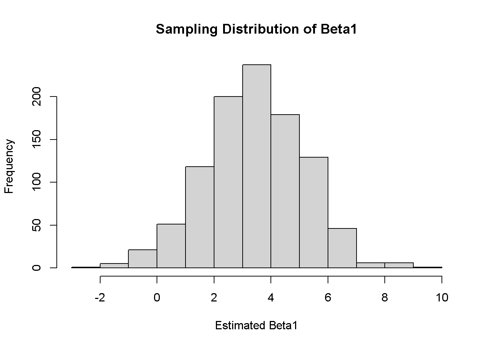
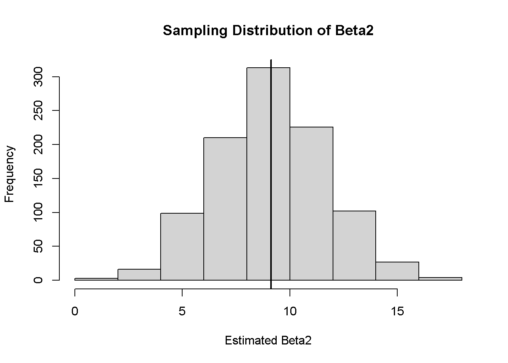

set.seed(123)
n <- 25
x <- rnorm(n,mean=0.0,sd=1.0)
beta0 <- 1
beta1 <- 0
## x is irrelevant in this model, the data generating process is as follows:
dgp <- beta0 + beta1*x
## The residual is heteroskedastic by construction
e <- x^2*rnorm(n,mean=0.0,sd=1.0)
y <- dgp + eECON 7201
Applied Econometrics
Applied Econometrics
Assignment 2
Due Date
November 5, 2026 at 11:59 PM
Directions
Answer all questions. Upload both a PDF and Quarto file to your website in a new blog post.
Git and GitHub
- Create a new R project in your econ_3201 directory called assignment_2.
- Download the assignment PDF and Quarto file the assignment_2 folder.
- Commit and push the changes to your econ_3201 repository on GitHub.com.
LaTeX
Matrices are created in LaTeX using the \begin{bmatrix}...\end{bmatrix} command. To separate entries along the same row, use &. To end a line, use \\. To make vertical elipses (\(\vdots\)), use \vdots. Practice writing the following matrices and vectors in LaTeX. Write the following matrices in LaTeX.
Tip
\[ X'X = \begin{bmatrix} n & \sum_{i=1}^{n} x{1i} & \sum_{i=1}^ {n} x_{2i} \\ \sum_{i=1}^{n} x_{1i} & \sum_{i=1}^{n} x_{1i}^{2} & \sum_{i=1}^{n} x_{1i}x_{2i} \\ \sum_{i=1}^{n} x_{2i} & \sum_{i=1}^{n} x_{1i}x_{2i} & \sum_{i=1}^{n} x_{2i}^{2} \end{bmatrix} \]
Tip
\[ \Omega = \begin{bmatrix} \sigma_1^2 & 0 & 0 & 0 \\ 0 & \sigma_2^2 & 0 & 0 \\ 0 & 0 & \sigma_3^2 & 0 \\ 0 & 0 & 0 & \sigma_4^2 \end{bmatrix} \]
R
- In this question we compare standard errors based on (incorrect) asymptotic assumptions with those based on alternate (appropriate) estimator (White). Consider one sample drawn from the following data generating process (DGP) which we will simulate in
R:
- Compute the OLS estimator of \(\beta_2\) and its standard error using the
lm()command inRfor the model \(y_i=\beta_1+\beta_2 x_i+\epsilon_i\) based on the DGP given above.
Tip
ols_model <- lm(y ~ x)
summary (ols_model)The OLS estimate of beta_2 is 0.4610, and it’s standard error is 0.2563.
- Next, compute the standard error of \(\hat\beta_2\) by computing \(\hat\sigma^2(X'X)^{-1}\) in
Rusing matrix commands, and verify that the two standard error estimates are identical.
Tip
# Create the X matrix
X <- cbind(1, x)
# Calculate the OLS residuals
beta_hat <- solve(t(X) %*% X) %*% t(X) %*% y
e_hat <- y - X %*% beta_hat
# Calculate estimated error variance
sigma2_hat <- as.numeric(t(e_hat) %*% e_hat) / (n - 2)
# Calculate variance-covariance matrix
V <- sigma2_hat * solve(t(X) %*% X)
# Calculate standard error of beta2
sqrt(V[2, 2])The standard error of beta_2 calculated using the matrix formula is approximately 0.2563. This is identical to the standard error obtained using the lm() function in question 3(a).
- Compute White’s heteroskedasticity consistent covariance matrix estimator using matrices in R and report the White estimator of the standard error of \(\hat\beta_2\). Compare this with that from 3 (a) above.
Tip
# Calculate White heteroskedasticity-consistent covariance matrix
bread <- solve(t(X) %*% X)
meat <- t(X) %*% (X * as.vector(e_hat^2))
V_white <- bread %*% meat %*% bread
# Calculate White standard error of beta2
se_white <- sqrt(V_white[2, 2])
se_whiteThe white heteroskedasticity-consistent standard error of beta_2 is 0.4529. The standard errors in 3(a) are identical. The White standard error is larger, reflecting the adjustment for heteroskedasticity.
- Let \(\hat{\theta}\) be an estimator for the population parameter \(\theta\). \(\hat{\theta}\) is said to be unbiased if \(E(\hat\theta)=\theta\). That is, if the mean of the sampling distribution of \(\hat{\theta}\) is equal to the true population value.
Consider the model \[y_i=\beta_0+\beta_1x_{1,i}-\beta_2x_{2,i}+\epsilon_i.\] Lets provide empirical evidence that the ordinary least squares estimators \(\hat\beta_0\), \(\hat\beta_1\), and \(\hat\beta_2\) are unbiased estimators of \(\beta_0\), \(\beta_1\), \(\beta_2\), respectively, using R.- Set the seed to 1, i.e.,
set.seed(1). - Set the number of observations \(n=100\)
- Generate the following model \[y_i=2+3.5x_{1,i}-9.2x_{2,i}+\epsilon_i,\] where \(x_1\sim N(3,6)\), \(x_2\sim N(2,4)\), and \(\epsilon\sim N(0,100)\). To create a normally distributed variable, use the
rnorm(n, mean, sd)command in R. - Estimate the model coefficients using the
lm()command. (Search?lm()in the console for more info). - Using a
for()loop, replicate the model above \(M=1000\) times and save the coefficient estimates from each iteration. - Using
hist(), plot the sampling distributions of the coefficient estimates, \(\beta_1\) and \(\beta_2\). - Add a vertical line to each figure at the mean of the respective variable. Search
?abline()in your console.
- Set the seed to 1, i.e.,
Tip
# 4(a) Set the seed
set.seed(1)
# 4(b) Number of observations
n <- 100
# 4(c) Generate the explanatory variables and error term
x1 <- rnorm(n, mean = 3, sd = 6)
x2 <- rnorm(n, mean = 2, sd = 4)
epsilon <- rnorm(n, mean = 0, sd =100)
# Generate the dependent variable
y <- 2 + 3.5*1 - 9.2*x2 + epsilon
# 4(d) Estimate the model using OLS
model <- lm(y ~ x1 + x2)
summary(model)set.seed(1)
n <- 100
# 4(e) Repeat the simulation 1000 times
M <- 1000
# Store the coefficient estimates
estimates <- matrix(NA, nrow = M, ncol = 3)
for (i in 1:M) {
x1 <- rnorm(n, mean =3, sd = 6)
x2 <- rnorm(n, mean =2, sd = 4)
epsilon <- rnorm(n, mean = 0, sd = 100)
y<- 2 + 3.5*x1 - 9.2*x2 + epsilon
model <- lm(y ~ x1 + x2)
estimates[i, ] <- coef(model)
}
# Calculate the average estimates
colMeans(estimates)[1] 1.835807 3.412558 -9.131447# 4(f) Histogram for beta1
hist(estimates[, 2],
main = "Sampling Distribution of Beta1",
xlab = "Estimated Beta1")
# Histogram for beta2
hist(-estimates[, 3],
main = "Sampling Distribution of Beta2",
xlab = "Estimated Beta2")
abline(v = mean(-estimates[, 3]), lwd =2)